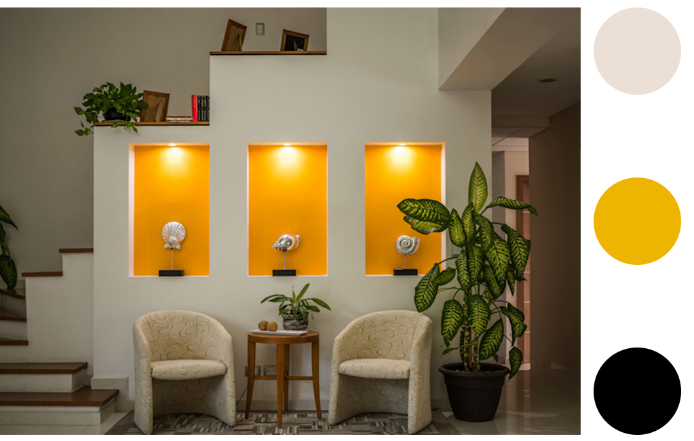

|
¿Qué es el color?
Dentro del diseño y decoración de interiores, el color es uno de los elementos más importantes para obtener una atmósfera bella y funcional. El color es una ilusión óptica que se produce a través de la luz. |
|  |
|
Cómo decidir los colores en el diseño de interiores de tu casa:
Esto es lo que debes tomar en cuenta para decidir los colores en el diseño de interiores:
Asentar muy bien el estilo decorativo de una casa es muy importante, pues de ahí se desprende la gama cromática más adecuada. Por ejemplo para ambientes rústicos o rurales los colores terra van de maravilla; mientras que para el estilo moderno lo optimo es usar colores fuertes, y combinados de una manera atrevida. |